'data.frame': 943 obs. of 6 variables:
$ Result : int 0 1 0 1 0 0 0 1 0 1 ...
$ Player1 : chr "Lukas Lacko" "Leonardo Mayer" "Marcos Baghdatis" "Dmitry Tursunov" ...
$ Player2 : chr "Novak Djokovic" "Albert Montanes" "Denis Istomin" "Michael Russell" ...
$ Round : int 1 1 1 1 1 1 1 1 1 1 ...
$ tournament: chr "AusOpen" "AusOpen" "AusOpen" "AusOpen" ...
$ gender : chr "M" "M" "M" "M" ...Untitled
1. Brief Statement of The Aim of The Project
In this project, data is 4 different tennis singles 2013 grand slams match statistics. In the data, there are different statistics about match like foul, number of firs serve win, and others that will be explained in the next part. Aim of the project is predict the result of the tennis match by using different match statistics. Another aim is to find most effective match statistics for the win. To reach this aim, firstly, data will be cleaned and tidied for the EDA and CDA. Then, explanatory data analysis and confirmatory data analysis will be done to see how data distributed and to interpret variables effectively. Then, missing values will be handled and data manipulation and feature engineering will be done if it is necessary. Finally, for statistical modeling to predict match result cross-validation techniques will be used. And, statistical modeling will be performed and performance of statistical modeling will be investigated.
2. Source of The Data, Variables and Dependent Variable
Source of the data is UC Irvine Machine Learning Repository. In the source of the data, there is 8 different csv file. Each one represent different tournament from 2013 (Aus Open-Men,AusOpen-Women, USOpen-men,…). Data has 4 different tournament group by gender, so we have 8 different csv file data. All of the 8 csv data has same 42 variables, so all of them are combined to 1 csv file and 2 variable added as tournament and gender. At the end, data has 44 variable. Variable descriptions can be seen on APPENDİX A. Dependent variable is ‘Result’. Our data have 943 match observations.
3. Data Cleaning and Tidying
Check variables and data types for character variables and some variables that should be factor. Others are already numeric type as desired.
Character values, “Round” and “Result” should be a factor. And name of the variables should be all upper or lower letter. So, all names of variables changed to upper letter.
[1] "PLAYER1" "PLAYER2" "ROUND" "RESULT" "FNL.1"
[6] "FNL.2" "FSP.1" "FSW.1" "SSP.1" "SSW.1"
[11] "ACE.1" "DBF.1" "WNR.1" "UFE.1" "BPC.1"
[16] "BPW.1" "NPA.1" "NPW.1" "TPW.1" "ST1.1"
[21] "ST2.1" "ST3.1" "ST4.1" "ST5.1" "FSP.2"
[26] "FSW.2" "SSP.2" "SSW.2" "ACE.2" "DBF.2"
[31] "WNR.2" "UFE.2" "BPC.2" "BPW.2" "NPA.2"
[36] "NPW.2" "TPW.2" "ST1.2" "ST2.2" "ST3.2"
[41] "ST4.2" "ST5.2" "TOURNAMENT" "GENDER" Before change character values, “Round” and “Result” to factor let’s check head and tail of the data set. There is 44 variable, so visualizing the head and tail is not feasible. Therefore, just problematic variable parts of the data shown.
Head and tail of the PLAYER1 and PLAYER2:
| PLAYER1 | PLAYER2 |
|---|---|
| Lukas Lacko | Novak Djokovic |
| Leonardo Mayer | Albert Montanes |
| Marcos Baghdatis | Denis Istomin |
| PLAYER1 | PLAYER2 | |
|---|---|---|
| 941 | M.Bartoli | K.Flipkens |
| 942 | S.Lisicki | A.Radwanska |
| 943 | S.Lisicki | M.Bartoli |
As seen on the “PLAYER1” and “PLAYER2”, there is problem about how player names saved to data. In some rows player names saved as full name (first name + surname). However, in other rows, player names saved as shortened way like “M.Bartolli”. This problem fixed by convert all names shortened.
After fixed player names, there is 358 player on this data set.
| PLAYER1 | PLAYER2 |
|---|---|
| L.Lacko | N.Djokovic |
| L.Mayer | A.Montanes |
| M.Baghdatis | D.Istomin |
Except player name columns, data seems well tabulated data. There is no unnecessary columns. There is 0 duplicated observations in the data set. Player names fixed too.
Now character values, “Round” and “Result” can be changed to factor. And finalize structure of the data is:
Also there is problem about BPC(Break Points Created) and BPW(Break Points Win). Logically, BPC must be greater or equal to BPW but in some rows BPC is lower than BPW like below example. This fixed by exchanging BPC values by BPW and BPW values by BPC when BPW > BPC.
| BPC.1 | BPW.1 | BPC.2 | BPW.2 |
|---|---|---|---|
| 1 | 3 | 4 | 8 |
| 7 | 14 | 0 | 0 |
| 1 | 9 | 4 | 13 |
There are similar problems with NPA and NPW for Aus open and French Open tournaments, NPA should be greater or equal to NPW. This fixed by exchanging NPA values by NPW and NPW values by NPA when NPW > NPA.
| NPA.1 | NPW.1 | NPA.2 | NPW.2 | |
|---|---|---|---|---|
| 1 | 8 | 11 | 8 | 9 |
| 3 | 16 | 23 | 12 | 16 |
| 5 | 9 | 13 | 16 | 28 |
After fix the problem, all BPC values are greater than BPW. Same for NPA and NPW.
4. Explanatory Data Analysis(EDA) and Confirmatory Data Analysis(CDA)
Summary Statistics
Below there are frequency tables for tournament, round, result and gender. Ausopen and French open tournaments have most number of match. Also, as expected most matches played at round 1. Number of male matches are greater than female matches. Moreover, Most round 1 matches played at US open, but at the remaining round US Open matches are not much when considering other tournaments. There can be incomplete data for US Open.
| TOURNAMENT | ROUND | RESULT | GENDER | |
|---|---|---|---|---|
| AusOpen :253 | 1:536 | 1:465 | F:452 | |
| FrenchOpen:252 | 2:197 | 2:478 | M:491 | |
| USopen :202 | 3:107 | NA | NA | |
| Wimbledon :236 | 4: 55 | NA | NA | |
| NA | 5: 27 | NA | NA | |
| NA | 6: 14 | NA | NA | |
| NA | 7: 7 | NA | NA |
| 1 | 2 | 3 | 4 | 5 | 6 | 7 | |
|---|---|---|---|---|---|---|---|
| AusOpen | 128 | 64 | 31 | 16 | 8 | 4 | 2 |
| FrenchOpen | 127 | 63 | 32 | 16 | 8 | 4 | 2 |
| USopen | 153 | 20 | 16 | 7 | 3 | 2 | 1 |
| Wimbledon | 128 | 50 | 28 | 16 | 8 | 4 | 2 |
Summary statistics for numeric variables are below. Average performances are almost equal for player 1 and player 2 statistics. Average performance of tennis players can be seen in this summary statistics.
| FSP.1 | FSP.2 | FSW.1 | FSW.2 | ACE.1 | ACE.2 | BPC.1 | BPC.2 | |
|---|---|---|---|---|---|---|---|---|
| Min. :38.00 | Min. : 0.00 | Min. : 3.00 | Min. : 0.00 | Min. : 0.00 | Min. : 0.000 | Min. : 0.000 | Min. : 0.000 | |
| 1st Qu.:57.00 | 1st Qu.:57.00 | 1st Qu.: 26.00 | 1st Qu.: 25.00 | 1st Qu.: 2.00 | 1st Qu.: 1.000 | 1st Qu.: 5.000 | 1st Qu.: 5.000 | |
| Median :62.00 | Median :62.00 | Median : 37.00 | Median : 36.00 | Median : 4.00 | Median : 4.000 | Median : 9.000 | Median : 8.000 | |
| Mean :62.26 | Mean :61.97 | Mean : 38.79 | Mean : 38.69 | Mean : 6.14 | Mean : 5.983 | Mean : 8.792 | Mean : 8.648 | |
| 3rd Qu.:67.00 | 3rd Qu.:67.00 | 3rd Qu.: 49.00 | 3rd Qu.: 48.50 | 3rd Qu.: 8.00 | 3rd Qu.: 9.000 | 3rd Qu.:12.000 | 3rd Qu.:12.000 | |
| Max. :86.00 | Max. :93.00 | Max. :109.00 | Max. :132.00 | Max. :41.00 | Max. :39.000 | Max. :28.000 | Max. :26.000 | |
| NA | NA | NA | NA | NA’s :22 | NA’s :22 | NA’s :1 | NA’s :1 |
Also, set result summary is like below, as seen, there are a lot of NA values for ST4 and ST5 especially. This is because most of the match is not last to 5 or 4 set. It is over in 2 or 3 sets.
| ST1.1 | ST2.1 | ST3.1 | ST4.1 | ST5.1 | |
|---|---|---|---|---|---|
| Min. :0.000 | Min. :0.000 | Min. :0.000 | Min. :0.000 | Min. :0.000 | |
| 1st Qu.:3.000 | 1st Qu.:4.000 | 1st Qu.:3.000 | 1st Qu.:3.000 | 1st Qu.:3.000 | |
| Median :6.000 | Median :6.000 | Median :6.000 | Median :6.000 | Median :5.000 | |
| Mean :4.801 | Mean :4.781 | Mean :4.728 | Mean :4.787 | Mean :4.651 | |
| 3rd Qu.:6.000 | 3rd Qu.:6.000 | 3rd Qu.:6.000 | 3rd Qu.:6.000 | 3rd Qu.:6.000 | |
| Max. :7.000 | Max. :7.000 | Max. :9.000 | Max. :7.000 | Max. :9.000 | |
| NA’s :1 | NA’s :4 | NA’s :321 | NA’s :722 | NA’s :857 |
Research Questions
How does number of break points win (BPW) and break points created (BPC) corralete between 2 player according to result?
As seen in the scatter plot, there is correlation between result and break points win. If player has more break points than opponent player, then, player that has more BPW and BPC probably win the match.
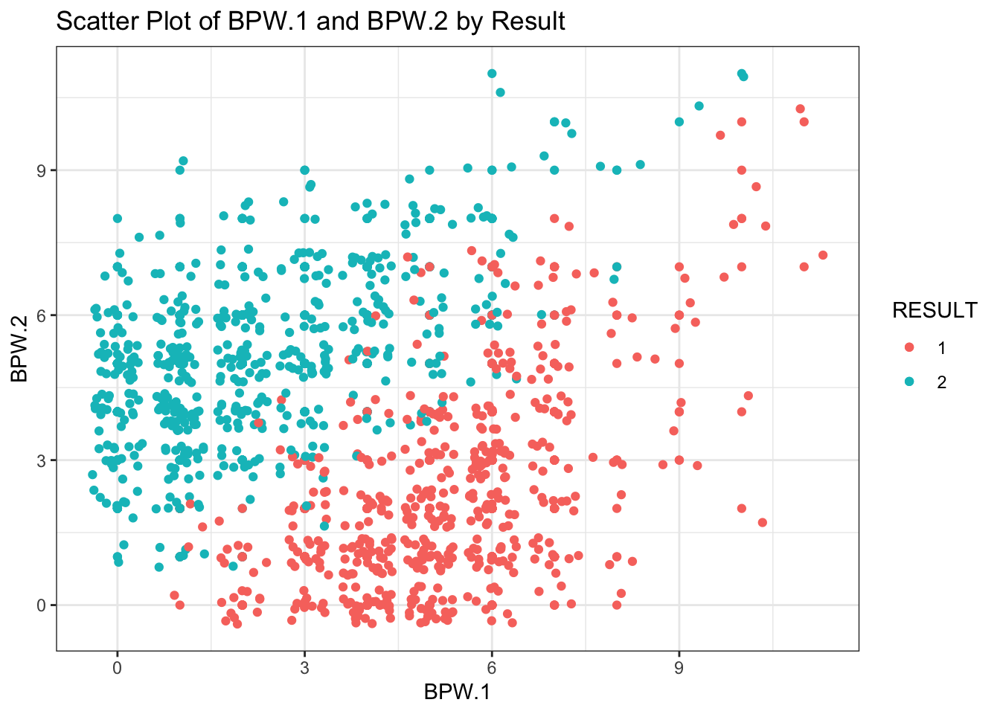
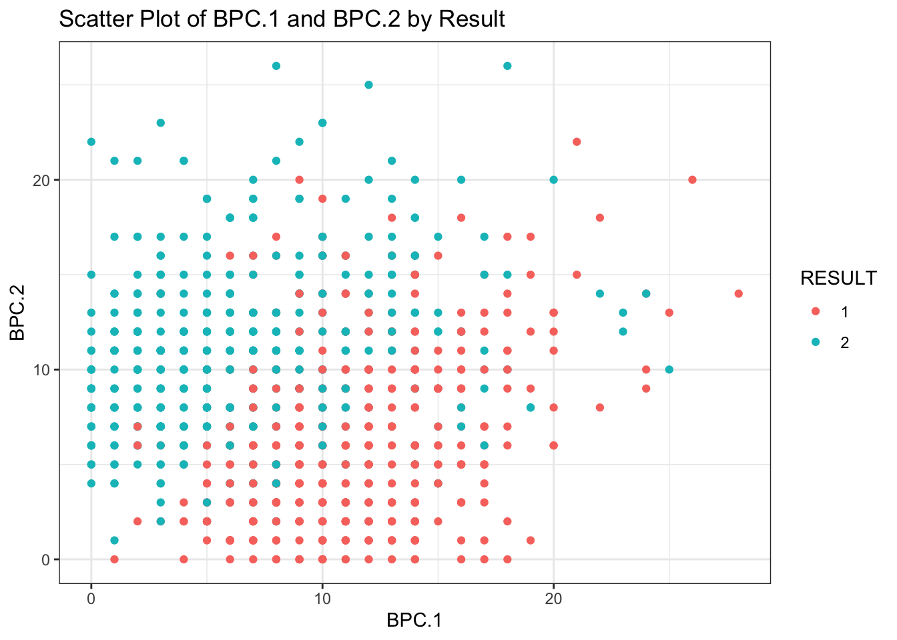
Hypothesis t-test can be conduct to show avarage BPC or BPW is greater for winning player.
Shapiro-Wilk normality test
data: BPC.1.P1win$BPC.1
W = 0.97274, p-value = 1.286e-07How does change distribution of first serve percentage (FSP) and First serve winning (FSW) for winning and losing player?
As seen on the density plot, when player win the match, player’s first serve percentage is increase. Therefore, first serve percentage can be effective for winning the match. Similarly, box plot of FSP show that winner player has more FSW than loser one. So, having more FSW can effect the result.
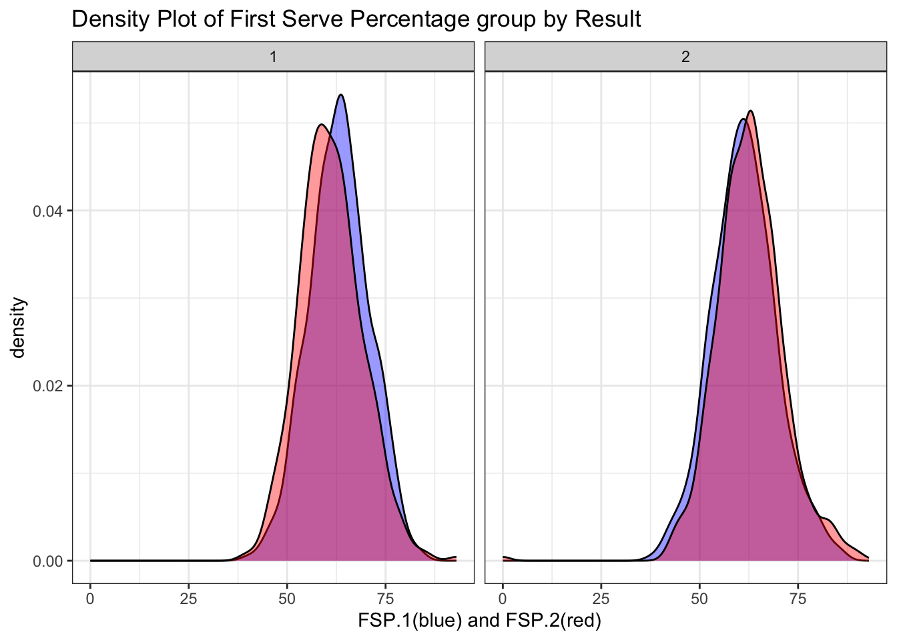
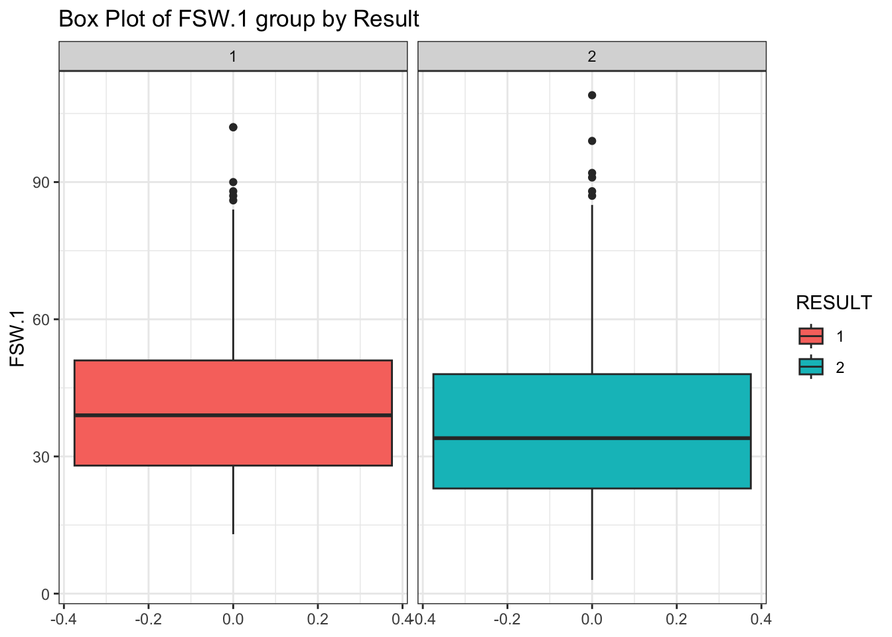
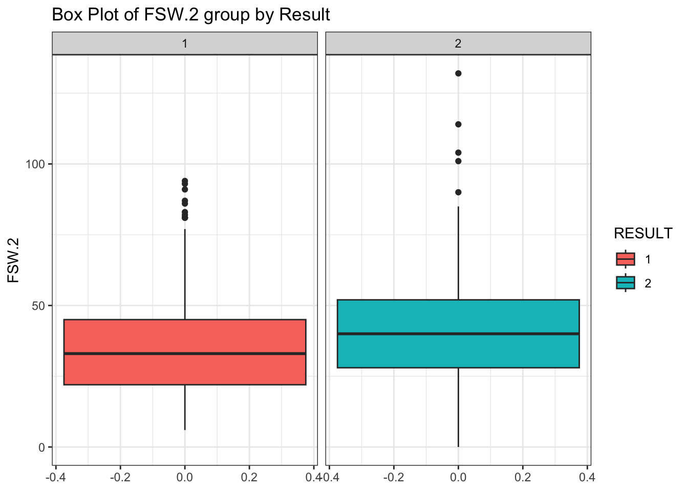
For confirmatory data analysis for this research question, two paired t-test can be conduct too. As seen on the t-test result, mean of FSP.1 is changed significantly when result change. t-tests for FSP.2 and FSW.2 are like FSP.1 and FSP.2, t-test resuşts can be seen on r code file.
[1] "Two-sample t-test for First Serve Percentage (FSP.1):"
Two Sample t-test
data: fsp1_P1win and fsp1_P2win
t = 3.756, df = 941, p-value = 0.0001833
alternative hypothesis: true difference in means is not equal to 0
95 percent confidence interval:
0.9190557 2.9303976
sample estimates:
mean of x mean of y
63.23226 61.30753
Shapiro-Wilk normality test
data: fsw1_P1win
W = 0.9498, p-value = 1.847e-11
Wilcoxon rank sum test with continuity correction
data: fsp1_P1win and fsp1_P2win
W = 127486, p-value = 4.549e-05
alternative hypothesis: true location shift is greater than 0How does distribution of number of double faul (DBF) and aces (ACE) change for different tournaments grouped by gender?
On this part, ACE variable is created by summing of ACE.1 and ACE.2. Similarly other variables are summing and total of player 1 and player 2 statistic variables are created. Aim of this research is investigating effect of different tournament on player performance. Each tournament have different surface type so this should be effect the match statistics. As seen in the boxplots, at French open tournament, players do less ace than other tounaments. Clay surface (French open surface) can lead to this, because clay surface slow down the ball. Also, in the boxplot of DBF, we can say that players do more double foul at the US and AUS open tournaments. Both tournaments has hard surfaces. Additionally, there is significant diffrence on male and female statistics for ACE, male can do more ACE than womwn according to this graph but number of sets are not same for male and female matches. Female matches are best of 3, but male matches are best of 5. So, this can be reason for that.
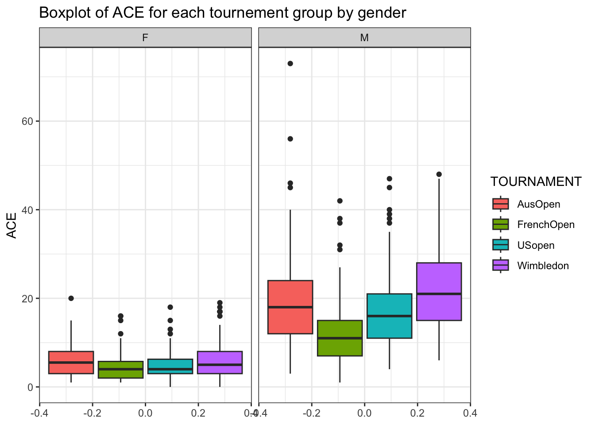
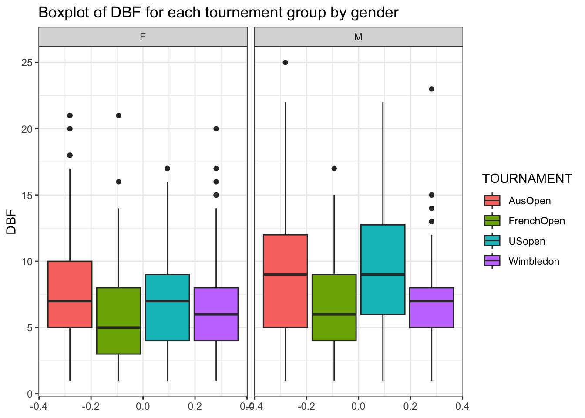
With analysis of variance (ANOVA) for DBF and ACE, We can see there are significant difference between tournaments and gender for 0.05 significance level.
[1] "ANAVO of DBF" Df Sum Sq Mean Sq F value Pr(>F)
TOURNAMENT 3 1134 378.1 24.13 4.82e-15 ***
GENDER 1 310 310.0 19.78 9.72e-06 ***
Residuals 930 14572 15.7
---
Signif. codes: 0 '***' 0.001 '**' 0.01 '*' 0.05 '.' 0.1 ' ' 1
8 observations deleted due to missingness[1] "ANAVO of ACE" Df Sum Sq Mean Sq F value Pr(>F)
TOURNAMENT 3 4114 1371 24.5 2.96e-15 ***
GENDER 1 36744 36744 656.5 < 2e-16 ***
Residuals 916 51265 56
---
Signif. codes: 0 '***' 0.001 '**' 0.01 '*' 0.05 '.' 0.1 ' ' 1
22 observations deleted due to missingnessAre there differences in the net points attempt (NPA) and net points win (NPW) by players across different rounds of the tournament by result?
NPA and NPW has right skewed distribution for each round except 7th round, but in 7th round we have 8 observation so it can mislead the interpretation of this plot for 7th round. Therefore player NPA and NPW performances are similar for all rounds except 7th.
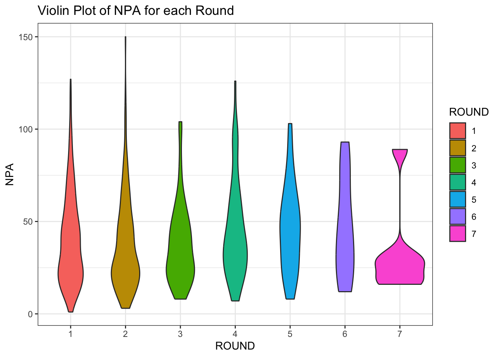
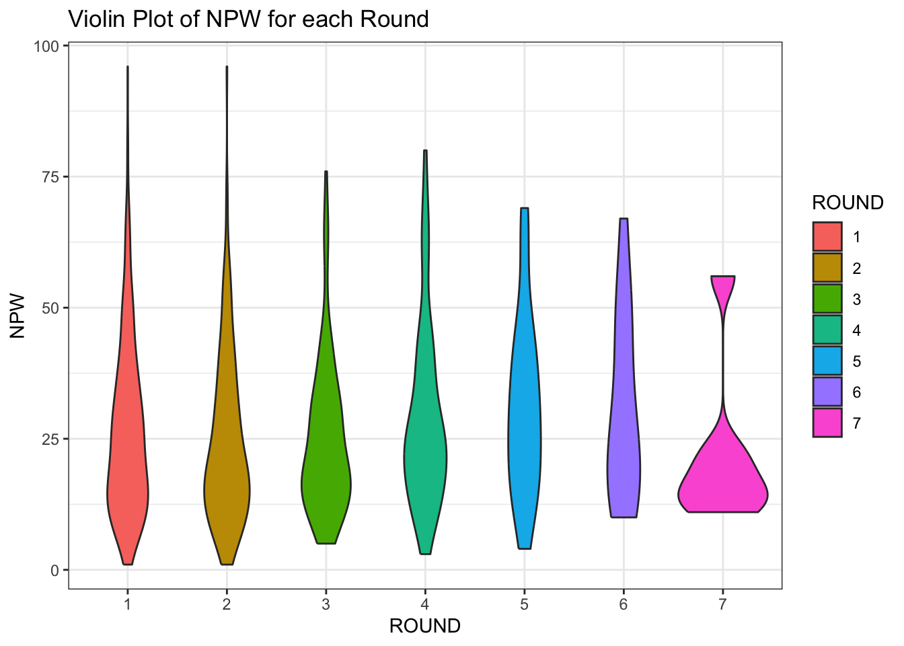
Again by using ANOVA, we can show there is significant difference or not in NPW and NPA. As seen in ANOVA, for 0.05 significance level, there is no significant difference between NPA and NPW observations of different rounds.
Shapiro-Wilk normality test
data: GrandSlam$NPA
W = 0.92911, p-value < 2.2e-16
Shapiro-Wilk normality test
data: GrandSlam$NPW
W = 0.92783, p-value < 2.2e-16
Kruskal-Wallis rank sum test
data: NPA by ROUND
Kruskal-Wallis chi-squared = 10.746, df = 6, p-value = 0.09654Is there any correlation between number of break points created (BPC), total points win (TPW) and first serve win (FSW)?
As seen on bubble plot, whwn BPC increase, TPW increase because when player break the opponent player serve, match can be extend. Also number of first serve win tend to increase when TPW and BPC increase.

For CDA, we can check correlations between BPC, TPW and FSW. As seen on correlation plot,
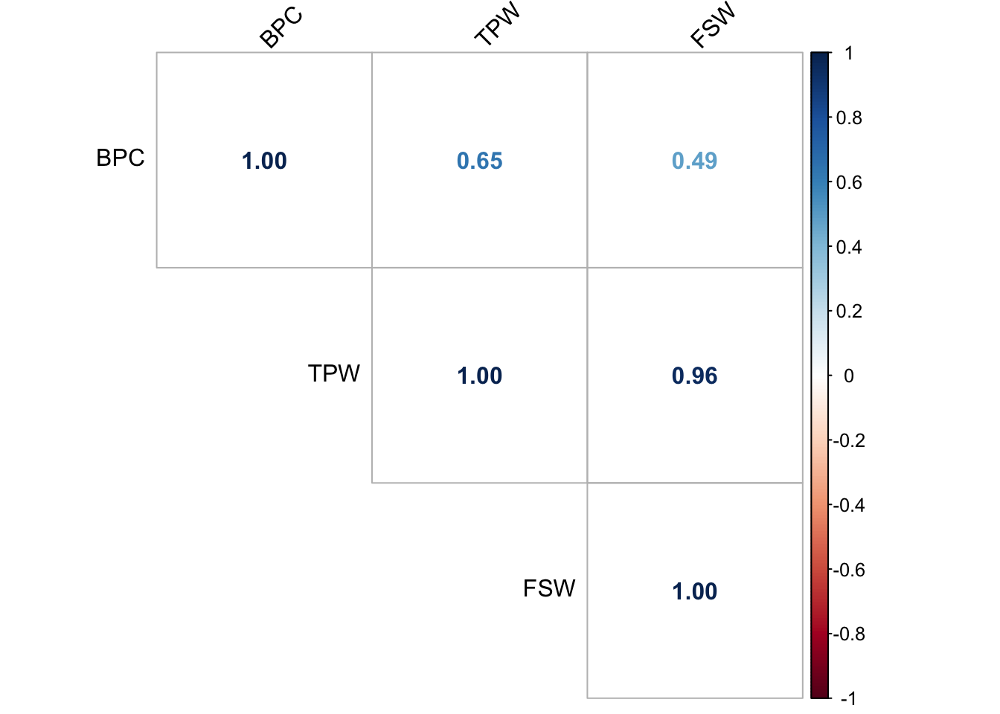
Also, checking p values of correlation test show that there is significant correlation between BPC, TPW and FSW for 0.05 significance level.
cor_test p_values
1 BPC_TPW 4.643419e-76
2 BPC_FSW 1.610577e-49
3 TPW_FSW 0.000000e+005. Missing Observation Cleaning, Imputation and Data Manipulation
Firstly, we should find NA values. As we look at the number of NA observations of variables that include NA (below), we can see there are 5338 NA values
| x | |
|---|---|
| FNL.1 | 1 |
| FNL.2 | 1 |
| ACE.1 | 22 |
| DBF.1 | 8 |
| WNR.1 | 126 |
| UFE.1 | 126 |
| BPC.1 | 1 |
| BPW.1 | 1 |
| NPA.1 | 84 |
| NPW.1 | 83 |
| TPW.1 | 312 |
| ST1.1 | 1 |
| ST2.1 | 4 |
| ST3.1 | 321 |
| ST4.1 | 722 |
| ST5.1 | 857 |
| ACE.2 | 22 |
| DBF.2 | 8 |
| WNR.2 | 126 |
| UFE.2 | 126 |
| BPC.2 | 1 |
| BPW.2 | 1 |
| NPA.2 | 84 |
| NPW.2 | 83 |
| TPW.2 | 312 |
| ST1.2 | 1 |
| ST2.2 | 4 |
| ST3.2 | 321 |
| ST4.2 | 722 |
| ST5.2 | 857 |
For, FNL.1 and FNL.2 NA observation are because of cancelled match. At the link, you can see this match (date 13.01.2014) is cancelled. This row is removed from data set.
There is NA in ACE.1 and ACE.2 columns at same observations, this is MCAR type missing observations, we can fill this values by median value of ACE. Median of ACE.1 and ACE.2 are and .
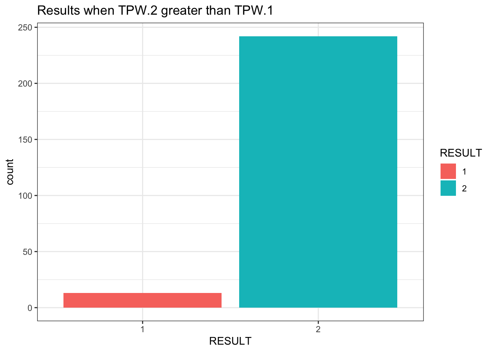
iter imp variable
1 1 ACE.1* DBF.1* NPA.1* NPW.1* ACE.2* DBF.2* NPA.2* NPW.2*
1 2 ACE.1* DBF.1* NPA.1* NPW.1* ACE.2* DBF.2* NPA.2* NPW.2*
1 3 ACE.1* DBF.1* NPA.1* NPW.1* ACE.2* DBF.2* NPA.2* NPW.2*
1 4 ACE.1* DBF.1* NPA.1* NPW.1* ACE.2* DBF.2* NPA.2* NPW.2*
1 5 ACE.1* DBF.1* NPA.1* NPW.1* ACE.2* DBF.2* NPA.2* NPW.2*
2 1 ACE.1* DBF.1* NPA.1* NPW.1* ACE.2* DBF.2* NPA.2* NPW.2*
2 2 ACE.1* DBF.1* NPA.1* NPW.1* ACE.2* DBF.2* NPA.2* NPW.2*
2 3 ACE.1* DBF.1* NPA.1* NPW.1* ACE.2* DBF.2* NPA.2* NPW.2*
2 4 ACE.1* DBF.1* NPA.1* NPW.1* ACE.2* DBF.2* NPA.2* NPW.2*
2 5 ACE.1* DBF.1* NPA.1* NPW.1* ACE.2* DBF.2* NPA.2* NPW.2*
3 1 ACE.1* DBF.1* NPA.1* NPW.1* ACE.2* DBF.2* NPA.2* NPW.2*
3 2 ACE.1* DBF.1* NPA.1* NPW.1* ACE.2* DBF.2* NPA.2* NPW.2*
3 3 ACE.1* DBF.1* NPA.1* NPW.1* ACE.2* DBF.2* NPA.2* NPW.2*
3 4 ACE.1* DBF.1* NPA.1* NPW.1* ACE.2* DBF.2* NPA.2* NPW.2*
3 5 ACE.1* DBF.1* NPA.1* NPW.1* ACE.2* DBF.2* NPA.2* NPW.2*
4 1 ACE.1* DBF.1* NPA.1* NPW.1* ACE.2* DBF.2* NPA.2* NPW.2*
4 2 ACE.1* DBF.1* NPA.1* NPW.1* ACE.2* DBF.2* NPA.2* NPW.2*
4 3 ACE.1* DBF.1* NPA.1* NPW.1* ACE.2* DBF.2* NPA.2* NPW.2*
4 4 ACE.1* DBF.1* NPA.1* NPW.1* ACE.2* DBF.2* NPA.2* NPW.2*
4 5 ACE.1* DBF.1* NPA.1* NPW.1* ACE.2* DBF.2* NPA.2* NPW.2*
5 1 ACE.1* DBF.1* NPA.1* NPW.1* ACE.2* DBF.2* NPA.2* NPW.2*
5 2 ACE.1* DBF.1* NPA.1* NPW.1* ACE.2* DBF.2* NPA.2* NPW.2*
5 3 ACE.1* DBF.1* NPA.1* NPW.1* ACE.2* DBF.2* NPA.2* NPW.2*
5 4 ACE.1* DBF.1* NPA.1* NPW.1* ACE.2* DBF.2* NPA.2* NPW.2*
5 5 ACE.1* DBF.1* NPA.1* NPW.1* ACE.2* DBF.2* NPA.2* NPW.2*
Asymptotic two-sample Kolmogorov-Smirnov test
data: GrandSlam_bfIMP$ACE.1[!is.na(GrandSlam_bfIMP$ACE.1)] and GrandSlam$ACE.1
D = 0.026791, p-value = 0.9349
alternative hypothesis: two-sided
Asymptotic two-sample Kolmogorov-Smirnov test
data: GrandSlam_bfIMP$ACE.2[!is.na(GrandSlam_bfIMP$ACE.2)] and GrandSlam$ACE.2
D = 0.026723, p-value = 0.9361
alternative hypothesis: two-sided
Asymptotic two-sample Kolmogorov-Smirnov test
data: GrandSlam_bfIMP$DBF.1[!is.na(GrandSlam_bfIMP$DBF.1)] and GrandSlam$DBF.1
D = 0.0060002, p-value = 1
alternative hypothesis: two-sided
Asymptotic two-sample Kolmogorov-Smirnov test
data: GrandSlam_bfIMP$DBF.2[!is.na(GrandSlam_bfIMP$DBF.2)] and GrandSlam$DBF.2
D = 0.0079316, p-value = 1
alternative hypothesis: two-sided
Asymptotic two-sample Kolmogorov-Smirnov test
data: GrandSlam_bfIMP$NPA.1[!is.na(GrandSlam_bfIMP$NPA.1)] and GrandSlam$NPA.1
D = 0.05586, p-value = 0.1687
alternative hypothesis: two-sided
Asymptotic two-sample Kolmogorov-Smirnov test
data: GrandSlam_bfIMP$NPA.2[!is.na(GrandSlam_bfIMP$NPA.2)] and GrandSlam$NPA.2
D = 0.05586, p-value = 0.1687
alternative hypothesis: two-sided
Asymptotic two-sample Kolmogorov-Smirnov test
data: GrandSlam_bfIMP$NPW.1[!is.na(GrandSlam_bfIMP$NPW.1)] and GrandSlam$NPW.1
D = 0.054003, p-value = 0.1979
alternative hypothesis: two-sided
Asymptotic two-sample Kolmogorov-Smirnov test
data: GrandSlam_bfIMP$NPW.2[!is.na(GrandSlam_bfIMP$NPW.2)] and GrandSlam$NPW.2
D = 0.053144, p-value = 0.2128
alternative hypothesis: two-sidedAfter missing data cleaning and imputation, we have 816 observations and 28 variables.
Statistical Modelling
Train-Test Data Set Preparation
GrandSlam data set splited by 20% test and 80% training by random selection. Before modelling, numeric variables in the train and test data set should be scaled. Firstly, train set is scaled and then, by using train set mean and standart deviation test set should be scaled too. Test and train sets are scaled after splitting, because, test observations should not be effect anything on the train data set in order to maintain integrity of model evaluation.
Logistic Regression
Logistic regression is used to predict the RESULT of the tennis matches on this project. As a cross validation method, k-fold cv is used for k equals 10. This cv is made by using “caret” package in r. Our dependent variable should be binary. So, RESULT is binary with 1 or 2.
Independence: predictors should be independent from each other, We can approve that by checking correlation between numeric predictors. As seen on the correlation plot. There are high correlation between NPW and NPA, BPC and BPW, FSP and SSP. So, NPW, BPW and SSP variables are removed from data set.
# Compute Pearson correlation coefficients
numeric_var <- GrandSlam_trn_std %>%
select(c(NPW.1,NPA.1,NPW.2,NPA.2,BPC.1 ,BPW.1,BPC.2 ,BPW.2,FSP.1, SSP.1,FSP.2, SSP.2))
correlation_matrix <- cor(numeric_var,use = "complete.obs")
# Print correlation matrix
corrplot(correlation_matrix, method = "number", type = "upper", tl.col = "black", tl.srt = 45)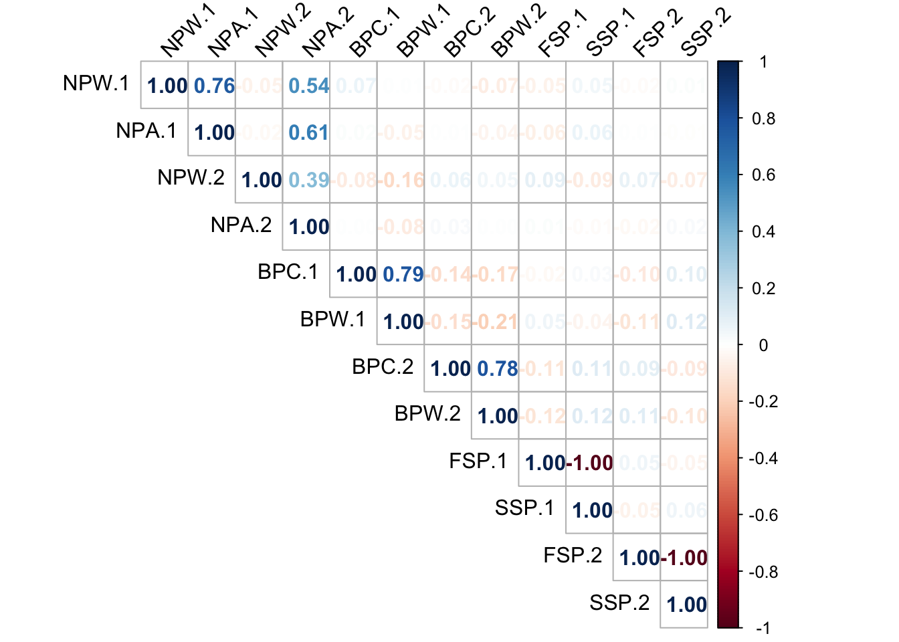
GrandSlam_trn_std <- GrandSlam_trn_std %>%
select(-c(NPW.1,NPW.2,BPW.1,BPW.2, SSP.1, SSP.2))
GrandSlam_tst_std <- GrandSlam_tst_std %>%
select(-c(NPW.1,NPW.2,BPW.1,BPW.2, SSP.1, SSP.2))Now, logistic regression can be applied. Logistic regression find that probability of result equal to 2.
FSW, SSW and BPC statistics are more effective than other to predict winner. Also, p-values show that FSW, SSW and BPC are highly significant predictors. FSW and BPC influence can be seen in EDA part too. That shows that, player can practice more serve shoots to increase the win rate. Also, model indicate that breaking the opponent serve with fast shoots is really effective on win rate.
On the other hand, WNR and UFE seems marginally significant and can be effective to predict result.
#10 k fold cv.
set.seed(25)
train_control <- trainControl(method = "cv", number = 10 ,savePredictions = "final")
log_model <- train(RESULT ~ ., data = GrandSlam_trn_std, method = "glm",family=binomial,
trControl = train_control)
log_model_1<-log_model$finalModel
summary(log_model)
Call:
NULL
Coefficients:
Estimate Std. Error z value Pr(>|z|)
(Intercept) -0.22320 0.57947 -0.385 0.7001
FSP.1 -0.68261 0.54033 -1.263 0.2065
FSW.1 -3.39320 0.56574 -5.998 2.00e-09 ***
SSW.1 -2.29155 0.50728 -4.517 6.26e-06 ***
ACE.1 -0.68040 0.42776 -1.591 0.1117
DBF.1 0.21371 0.36538 0.585 0.5586
WNR.1 -0.63741 0.42201 -1.510 0.1309
UFE.1 0.71008 0.43441 1.635 0.1021
BPC.1 -3.58080 0.56028 -6.391 1.65e-10 ***
NPA.1 0.61900 0.37750 1.640 0.1011
FSP.2 -0.33776 0.52577 -0.642 0.5206
FSW.2 4.08578 0.66701 6.126 9.04e-10 ***
SSW.2 2.10407 0.47605 4.420 9.88e-06 ***
ACE.2 0.34426 0.35544 0.969 0.3328
DBF.2 -0.22782 0.38762 -0.588 0.5567
WNR.2 0.69110 0.40023 1.727 0.0842 .
UFE.2 -0.37323 0.32758 -1.139 0.2546
BPC.2 2.29272 0.48770 4.701 2.59e-06 ***
NPA.2 -0.06424 0.35665 -0.180 0.8571
ROUND2 -0.34104 0.55173 -0.618 0.5365
ROUND3 -0.26839 0.72687 -0.369 0.7119
ROUND4 -0.44026 0.94060 -0.468 0.6397
ROUND5 -1.99098 1.19573 -1.665 0.0959 .
ROUND6 0.35155 2.69868 0.130 0.8964
ROUND7 -0.70453 19.69627 -0.036 0.9715
TOURNAMENTFrenchOpen -0.03947 0.61571 -0.064 0.9489
TOURNAMENTUSopen 1.73197 1.05558 1.641 0.1008
TOURNAMENTWimbledon 0.26597 0.61486 0.433 0.6653
GENDERM 0.06973 0.71894 0.097 0.9227
---
Signif. codes: 0 '***' 0.001 '**' 0.01 '*' 0.05 '.' 0.1 ' ' 1
(Dispersion parameter for binomial family taken to be 1)
Null deviance: 905.06 on 652 degrees of freedom
Residual deviance: 155.85 on 624 degrees of freedom
AIC: 213.85
Number of Fisher Scoring iterations: 9Other predictors are not significant, so we can remake the logistic regression with significant predictors.
Now all predictors are significant to predict RESULT. FSW is the most effective statistics to win the match. When FSW.1 change one unit, the log odds of the outcome decrease 3.11214 units. This means there is negative relationship between probability of result 2 and FSW.1. Similarly SSW.1, BPC.1, WNR.1 and UFE.2 has negative effect to result equal 2. As expected, FSW.2, SSW.2, BPC.2, WNR.2 and UFE.1 has positive relationship.
log_model <- train(RESULT ~ FSW.1+SSW.1+BPC.1+WNR.1+UFE.1+FSW.2+SSW.2+BPC.2+WNR.2+UFE.2, data = GrandSlam_trn_std, method = "glm",family=binomial,
trControl = train_control)
log_model1<- log_model$finalModel
summary(log_model)
Call:
NULL
Coefficients:
Estimate Std. Error z value Pr(>|z|)
(Intercept) -0.1470 0.2272 -0.647 0.51756
FSW.1 -3.3222 0.4456 -7.456 8.93e-14 ***
SSW.1 -1.5061 0.2746 -5.485 4.12e-08 ***
BPC.1 -3.2159 0.4142 -7.764 8.26e-15 ***
WNR.1 -0.8519 0.3250 -2.621 0.00876 **
UFE.1 0.6404 0.3074 2.083 0.03722 *
FSW.2 3.6181 0.4606 7.855 4.00e-15 ***
SSW.2 2.1677 0.3389 6.397 1.59e-10 ***
BPC.2 2.2941 0.4304 5.330 9.84e-08 ***
WNR.2 0.3612 0.2918 1.238 0.21581
UFE.2 -0.4994 0.2203 -2.267 0.02341 *
---
Signif. codes: 0 '***' 0.001 '**' 0.01 '*' 0.05 '.' 0.1 ' ' 1
(Dispersion parameter for binomial family taken to be 1)
Null deviance: 905.06 on 652 degrees of freedom
Residual deviance: 172.09 on 642 degrees of freedom
AIC: 194.09
Number of Fisher Scoring iterations: 8You can find vif matrix of logistic regression below. There are no higher than 5 vif value. So, there is no highly correlated variables that lead multicollinearity.
vif(log_model1) FSW.1 SSW.1 BPC.1 WNR.1 UFE.1 FSW.2 SSW.2 BPC.2
4.149757 1.964917 2.596581 2.456327 2.302997 4.033307 2.424501 2.571267
WNR.2 UFE.2
1.746291 1.712156 There is confusion matrix for test data and performance statistics for test and train data.
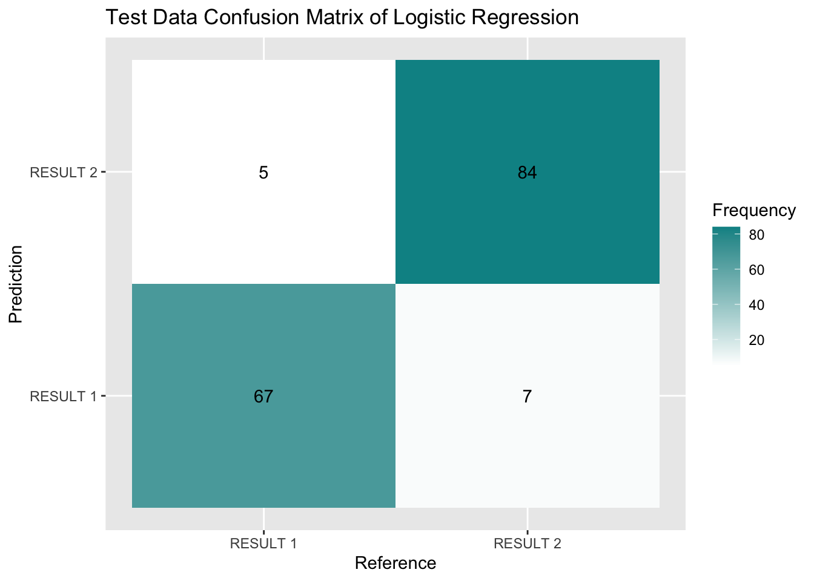
| Metric | Value |
|---|---|
| Accuracy | 0.9263804 |
| Precision | 0.9305556 |
| Recall | 0.9054054 |
| F1-Score | 0.9178082 |
Accuracy is 0.9263804 for test data which is acceptable and effective result. Other performance parameters show high performance as well.
APPENDİCES
APPENDİX A
| Name of Variable | Definition of Variable |
|---|---|
| Player 1 | Name of Player 1 (Nominal) |
| Player 2 | Name of Player 2 (Nominal) |
| Round | Round of the tourneament (Nominal Ordinal) (1: 1st elimination round, 7: Final of the tournament ) |
| Result | Result of the match (0/1) - Referenced on Player 1 is Result = 1 (Nominal) |
| FSP.1 and .2 | First Serve Percentage for player 1 (if .2, player 2) (Integer) |
| FSW.1 and .2 | First Serve Won by player 1 (if .2, player 2) (Integer) |
| SSP.1 and .2 | Second Serve Percentage for player 1 (if .2, player 2) (Integer) |
| SSW.1 and .2 | Second Serve Won by player 1 (if .2, player 2) (Integer) |
| ACE.1 and .2 | Aces won by player 1 (if .2, player 2) (Integer) |
| DBF.1 and .2 | Double Faults committed by player 1 (if .2, player 2) (Integer) |
| WNR.1 and .2 | Winners earned by player 1 (if .2, player 2) (Integer) |
| UFE.1 and .2 | Unforced Errors committed by player 1 (if .2, player 2) (Integer) |
| BPC.1 and .2 | Break Points Created by player 1 (if .2, player 2) (Integer) |
| BPW.1 and .2 | Break Points Won by player 1 (if .2, player 2) (Integer) |
| NPA.1 and .2 | Net Points Attempted by player 1 (if .2, player 2) (Integer) |
| NPW.1 and .2 | Net Points Won by player 1 (if .2, player 2) (Integer) |
| TPW.1 and .2 | Total Points Won by player 1 (if .2, player 2) (Integer) |
| ST1.1 and .2 | Set 1 result for Player 1 (if .2, player 2) (Integer) |
| ST2.1 and .2 | Set 2 Result for Player 1 (if .2, player 2) (Integer) |
| ST3.1 and .2 | Set 3 Result for Player 1 (if .2, player 2) (Integer) |
| ST4.1 and .2 | Set 4 Result for Player 1 (if .2, player 2) (Integer) |
| ST5.1 and .2 | Set 5 Result for Player 1 (if .2, player 2) (Integer) |
| FNL.1 and .2 | Final Number of Games Won by Player 1 (if .2, player 2) (Integer) |
| tournament | Tournament name |
| gender | Tournament gender |
APPENDİX B
VIF matrix of logistic regression:
FSP.1 FSW.1 SSW.1
6.157686 6.486818 6.608488
ACE.1 DBF.1 WNR.1
3.374522 1.890051 4.078776
UFE.1 BPC.1 NPA.1
4.381304 4.719309 3.550146
FSP.2 FSW.2 SSW.2
5.320796 8.334148 4.750443
ACE.2 DBF.2 WNR.2
2.205981 2.150387 3.022742
UFE.2 BPC.2 NPA.2
3.343400 2.830212 3.295335
ROUND2 ROUND3 ROUND4
1.471492 1.399042 1.311480
ROUND5 ROUND6 ROUND7
1.510631 1.039341 1.001553
TOURNAMENTFrenchOpen TOURNAMENTUSopen TOURNAMENTWimbledon
1.821957 1.596124 1.932977
GENDERM
3.108233